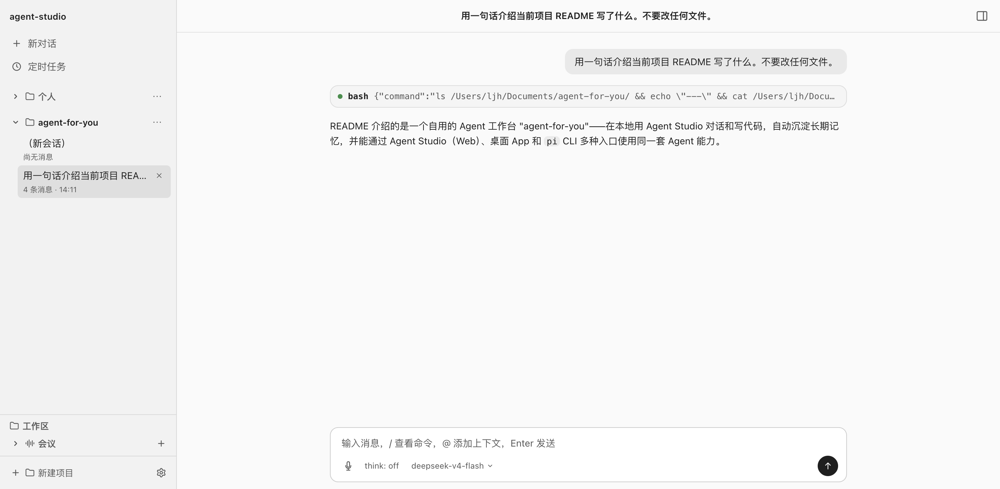
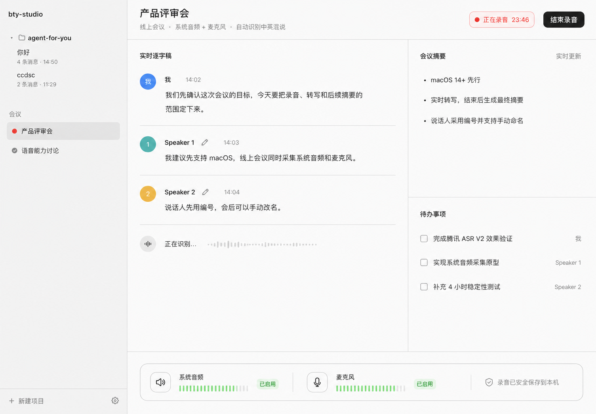

核心机制
真正的个人化，不是换一个人设
普通 AI 助手的“个人化”，往往只是一段预设提示词。Agent for You 希望建立的是一种会随着使用不断变化的用户理解：记住个人偏好、工作习惯、项目经历和重要决策，并在下一次任务中使用相关内容。
对话产生记忆，记忆进入下一次工作，新的工作继续更新记忆。
只提取以后还有价值的信息
对话结束后筛选稳定偏好、关键事件、项目决策和可复用经验，不把全部聊天记录塞进提示词。
本地 Markdown 是事实来源
候选记忆经过整理后成为可阅读、可修改的本地文件；检索索引可以重建，用户始终能够检查和纠正。
下一次只带上相关记忆
新任务开始时召回与当前项目有关的内容，让 Agent 从已有理解继续工作，而不是重新认识用户。
进入日常工作
同一个 Agent，围绕项目持续工作
长期记忆解决“它是否了解我”，下面这些能力则让它真正进入文件、会议和重复任务。它们共享同一份用户记忆与项目上下文，而不是四个孤立工具。

项目工作台
选定本地项目文件夹，Agent 直接读取文件、修改内容和运行命令，围绕真实材料开展工作。

长期记忆
跨会话保留个人偏好、项目决策与可复用经验，并在相关任务中重新召回，而不是每次从零开始。

AI 会议
完成录音、转写、总结和行动项提取，会议结果继续留在当前项目中，成为后续工作的上下文。

定时任务
按照计划启动独立 Agent 会话并保存运行结果，让重复工作不必每次由用户重新发起。
能力扩展
在同一个底座上不断获得新的工作能力
新增能力继续使用已有的用户记忆、项目材料和权限边界，扩展的是同一个 Agent 能够参与的工作范围。
MCP
通过标准协议接入外部服务和业务工具，并在配置变化后重新校验可用能力。
Computer Use
让 Agent 读取和操作电脑界面；涉及点击、输入和系统变更时，由用户逐项确认后才能执行。
任务录制器
记录用户演示的屏幕与操作事件，分析为可编辑步骤，并进一步生成可复用的 Skill。
工程实现
把高权限、长生命周期 Agent 做成可控制的桌面产品
当 Agent 能够读取本地文件、运行命令和操作电脑后，难点不再只是调用模型，而是如何管理会话、保存状态并约束权限。
每个会话独立运行
不同项目与会话由独立 Agent 进程承载，可以单独终止和回收，避免一次异常拖垮全部工作。
本地数据能够检查与恢复
会话、记忆、会议与自动化采用适合各自场景的本地事实来源，崩溃后仍能重新加载关键状态。
模型不能替用户授权
界面不直接获得本地执行权限；Computer Use 等高风险操作在执行层强制用户确认。
我的参与
参与产品定位，并用 AI 编程推进主要能力集成
围绕“长期了解用户、能力持续扩展”的个人 Agent 定位，参与关键产品取舍，并推动项目工作台、长期记忆、AI 会议与自动化接入同一底座，形成可运行的 Web、桌面与终端版本。
- 产品定位：不是功能更多的聊天助手，而是能够持续了解用户的个人 Agent。
- 能力落地：让记忆、项目与工作能力共享同一份上下文，而不是彼此孤立。
- 实现边界：基于 Pi Agent 做集成和扩展，不重新开发模型运行内核。
源码与 README 在 GitHub，可直接核对当前实现。